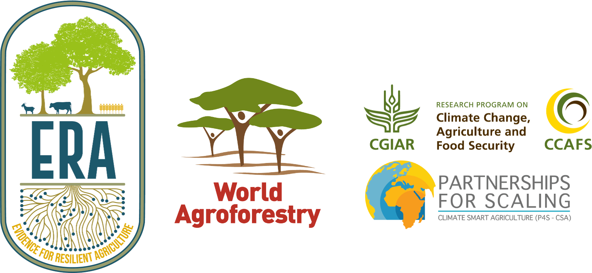

Intention
This website is designed to provide a step-by-step guide to how the ERA dataset can be analysed using inherent R functions that come as part of the ERAg package as well as advanced machine learning methods from the tidymodels meta-package framework. All analyses is demonstrated using packages within the freely available R statistical environment (Team R Development Core (2018)). The website is divided in three parts:
1) Introduction to a) Evidence for Resilient Agriculture, b) Machine Learning and c) the context of the research relevance for analysing agroforestry data from ERA,
2) An initial explorortive data analysis to familiarise ourself with the data.
3) A comprehensive step-by-step guide on how machine learning analysis using tidymodels can help to get better insights into how climate and soil factors influence the performance of agroforestry in Africa.
What is Evidence for Resilient Agriculture?
Evidence for Resilient Agriculture (ERA) is a meta-database designed to explore questions on the performance of agricultural practices, technologies and outcomes. ERA enables users to ask and answer questions about the effects of shifting from one practice or technology to another on indicators of productivity, resilience and climate change mitigation outcomes. It was specifically created to uncover what the data reveals regarding what works where and for whom. ERA makes it possible to perform dynamic and user-defined analysis based on cases such as: Policy Formulation, Investment Design, Financial Product Design & Delivery, Research Prioritisation, Advisory Service Delivery and Development Programming. Thereby making it possible to analyse a great variety of agricultural practices, outcomes and products from a user-centered approach, depending on the questions asked by either development organisations, academic researchers or policy -and decision-makers.
Show code
Figure 1: Evidence for Risilient Agriculture (ERA) is a dynamic analytical engine that generates actionable, user-centered decision-making support based on various ERA Use Cases. This allows users to fine-tune thier ERA-based analysis based on cases such as: Policy Formulation, Investment Design, Financial Product Design & Delivery, Research Prioritisation, Advisory Service Delivery and Development Programming.
The search - where does the data come from?
ERA was developed in general accordance with PRISMA guidelines.1 Peer-reviewed literature was searched for evidence of the performance of agricultural technologies using a systematic review protocol (Rosenstock and Wilkes 2021). This search targeted information on 112 technologies used in crop, livestock and tree production and 58 indicators of performance (e.g., yield, net economic returns, soil carbon, etc). The search was conducted in Web of Science and SCOPUS and yielded about 150,000 articles across developing countries (49,000+ in Africa). A study was included in the resulting database if it contained primary, quantitative data and if the following criteria were met: (1) it contained data on both a conventional technology (a control) and an ‘improved’ agricultural technology, (2) it took place in a developing country and (3) it contained information on at least one of the selected performance indicators. Abstracts and titles were reviewed to see if they matched the inclusion criteria and, if so, we conducted a more in-depth analysis of methods. Applying these inclusion criteria resulted in nearly 7,000 articles with relevant data across the entire dataset and nearly 1,400 studies that took place in Africa.
See the THE SCIENTIFIC BASIS OF CLIMATE-SMART AGRICULTURE: A SYSTEMATIC REVIEW PROTOCOL, Climate-Smart Agriculture Compendium 2019 Reference Guide and the vignette “ERA-Search-Protocols-Draft” in the ERAg package for a detailed explanation on the search protocol.
To view the ERA Search Protocols run this line in R:
# Run this code and open the vignette "ERA-Search-Protocols-Draft".
browseVignettes("ERAg")
The ERA database
Currently ERA contains about 75,000 observations from about 1,400 agricultural studies that have taken place in Africa. Data have been compiled on more than 250 agricultural products. Management practices, outcomes and products are nested within respective hierarchies, allowing ERA to aggregate and disaggregate information. These data are linked to detailed covariates such as climate, soil and socio-economics based on geographical coordinates reported in the studies and seasons reported or inferred from remote sensing.
The analysis potential
ERA supports capacities to analyse the database in many ways. The fundamental analysis follows standard meta-analysis procedures. Meta-analysis2 is a statistical way to combine research results across studies. Meta-analysis was first designed in medicine, then adopted in ecology, and more recently has been used in agricultural studies.
Response Ratios - the chosen effect size outcome in ERA
Specifically, ERA calculates response ratios (RR) and effect size statistics. The response ratio is calculated as the log ratio of the mean effect of the treatment (e.g. an improved practice) against the mean effect of the control practice. These response ratios can then be combined to generate an ‘effect size’ for the relationship, which provides an overall estimate of the magnitude and variability of the relationship. When calculating effect sizes, results from different studies are weighted to reduce bias from any given study (e.g., studies that has hundreds of observations are weighted higher than studies with very few observations). ERA weights the results of studies based on their level of precision. Because historical agricultural studies rarely report variance at the level necessary, ERA also weighs results positively based on the number of replications in a given study and negatively based on the number of observations.
Structure of ERA - higher level concepts and hierarchical mapping
Users inherently need information at different levels of aggregation. Policy-makers, for example, often talk about management practices and outcomes such as agroforestry and productivity, respectively. Extension agents, by contrast, refer to management practices in greater detail, describing, for example, the difference between intercropping3 with leguminous and non-leguminous trees—both types of agroforestry —and their relative impacts on yield and gross economic returns, both of which are indicators of productivity. The power of ERA is that is can serve both needs. It developed and employed a hierarchical structure for management practices, outcomes and products. This structure, when combined with meta-analysis, allows research results to be aggregated and disaggregated to any level on demanded. These hierarchical structures are in the process of being mapped to other major agricultural ontologies to increase interoperability with other datasets and efforts (e.g. RHoMIS4 and/or APHLIS5)
In addition to spatial and temporal co-variables, such as biophysical factors and geo-locations (longitude and latitude), there are three high level concepts that are the foundation of ERA’s experiment classification system. These are practices, outcomes and products also called experimental units (EUs). Practices here is shorthand for management practices and technologies which describe agronomic, agroforestry, and livestock interventions, for example, crop rotations, livestock dietary supplements or the like. Outcomes, as they sound, relate to the dependent variables in experiments (e.g., yield, benefit-cost ratios, soil carbon etc.). Products refers to the the species or commodity that the outcome is measured on, for example maize, milk, or meat.
Each is organized hierarchically, where concepts are nested below and above related concepts. This organization allows the user to aggregate or disaggregate data using these fields to explore different questions, from narrow (e.g., how does a Gliricidia-based alley cropping change maize crop yields?) to broad (e.g., considering all products which practices, on average, improve productivity, resilience and mitigation outcomes?). It also facilitates the user to deliver information at a level relevant for specific users. For example, policy-makers refer to agroforestry broadly while farmers are typically more interested in nuanced (disaggregated) results for species and practices. ERA’s practices, outcomes, and products hierarchies are unique but recently has been mapped to other ontologies including AGROVOC.6 and AgrO. AgrO7 to increase future interoperability. These mappings will be available in future releases of ERA. We can view the subordinates of these high level concepts by accessing the datasets PracticeCodes, OutcomesCodes and EUCodes included with the ERAg package. Alternatively the organization of higher level concepts can also be viewed in the ERAConcepts list or in somewhat less detail in the manuscript describing the data.
As explained ERA is structured based on hierarchy. Where practices, outcomes and products have various levels of aggregation. For example practices have Theme as the highest aggregated level, followed by Practice and then Sub-Practice. Outcomes are aggregated as Pillar, followed by Sub-Pillar, Indicator and finally Sub-Indicator. Products are aggregated by Type and Sub-Type.
Hierarchy and aggregation levels for ERA Observations
ERAg::ERAConcepts$Agg.Levels
Choice Choice.Code Agg Label
1: Observation O Index No. Locations
2: Study S Code No. Studies
3: Location L Site.Key No. ObservationsHierarchy and aggregation levels for ERA Practices
ERAg::ERAConcepts$Prac.Levels
Choice Choice.Code Prac Base
1: Subpractice S SubPrName SubPrName.Base
2: Practice P PrName PrName.BaseHierarchy and aggregation levels for ERA Outcomes
ERAg::ERAConcepts$Out.Levels
Choice Choice.Code Out
1: Subindicator SI Out.SubInd
2: Indicator I Out.Ind
3: Subpillar SP Out.SubPillar
4: Pillar P Out.PillarHierarchy and aggregation levels for ERA Products
ERAg::ERAConcepts$Prod.Levels
Choice Choice.Code Prod
1: Product P Product.Simple
2: Subtype S Product.Subtype
3: Type T Product.TypeHow did ERA evolve - looking back
ERA has a long history and started as the Climate-Smart Agriculture Compendium in 2012. Since then, the project has gone through many iterations and improvements to clarify the underlying practices, outcomes and product descriptions and hierarchies; built on external databases; prototype data products with users; and develop online capacity. The CSA Compendium (and subsequently ERA) has been principally funded by the CGIAR’s Research Program on Climate Change, Agriculture and Food Security (CCAFS) Flagship on Practices and Technologies. It has received supplementary funding from the European Union, International Fund for Agricultural Development (IFAD), Food and Agriculture Organization of the United Nations, United States Department of Agriculture–Foreign Agricultural Service (USDA–FAS), CCAFS Flagship on Low-emission Development and Center for Forestry Research’s (CIFOR) Evidence-Based Forestry. The Web portal was specifically funded by the EU–IFAD project: Building Livelihoods and Resilience to Climate Change in East and West Africa: Agricultural Research for Development (AR4D) for large-scale implementation of Climate-Smart Agriculture (#2000002575).

Why agroforestry?
Agroforestry is considered as one of the most sustainable intensification practices, and now widely promoted in SSA as it provides low-input, resource-conserving farming approaches that are socially relevant and relate well to livelihoods and ecosystem functions. Agroforestry can help to maintain food supplies in many landscapes in SSA while at the same time increasing their climate resilience. The practice involves deliberate growing of woody perennials in association with food crops and pastures. Agroforestry is viewed as a sustainable alternative to monoculture systems because of its ability to provide multiple ecosystem services. In some areas, agroforestry is preferred over monoculture systems, because it can combine provisioning ecosystem services with environmental benefits. For example, agroforestry can raise carbon stocks in agricultural systems, maintain or improve soil fertility, regulate soil moisture content, control erosion, enhance pollination, and supply food (e.g., fruits and nuts), fuel wood, fodder, medicines, and other products Kuyah et al. (2019). Ecosystem services -and the productivity of agroforests are affected by tree-crop-environment interactions.
These interactions can occur aboveground, for example through interception of radiant energy and rainfall by foliage and moderation of temperatures by canopies or belowground, e.g., in resource use (nutrient, water, space) competition, or complementarity. Primarily, tree-crop-environment interactions influence biomass production, nutrient uptake and availability, storage and availability of water in the soil, water uptake by trees and crops, loss by evapotranspiration, and crop yields. Despite the great number of studies investigating the role of agroforestry practices in ecosystem service provision, evidence is still lacking concerning the overall effects of agroforestry and the influence of biophysical conditions (co-variables) affect crop yield (and soil fertility, erosion control, and water regulation etc.). This makes it difficult to assess the degree to which different biophysical conditions and agroforestry practices can be optimized to agroecological systems, and to anticipate their respective consequences on crop yield. Because agroforestry has the potential to contribute to both climate change mitigation and adaptation by sequestering carbon, reducing greenhouse emissions, enhancing resiliency, and reducing threats while facilitating biodiversity migration to more favourable conditions in the highly fragmented agricultural landscapes, it is a promissing practice to investigate.
Show code
ggdraw() +
draw_image(here::here("IMAGES", "Agroforestry_win_win.png"))
![Figure from @Kuyah2019 - Agroforestry practices common in Africa. **a** Homegarden (a mosaic landscape with cassava, pawpaw, Mangifera indica L. and Grevillea robusta A.Cunn. ex R.Br. in Uganda). **b** Dispersed intercropping (M. indica in maize-bean intercrop in Malawi). **c** Intercropping with annual crops between widely spaced rows of trees (collard intercropped with G. robusta). **d** Alley cropping (climbing beans planted between hedges of Gliricidia sepium (Jacq.) Kunth ex Walp. in Rwanda)](INTRO_files/figure-html5/unnamed-chunk-2-1.png)
Figure 2: Figure from Kuyah et al. (2019) - Agroforestry practices common in Africa. a Homegarden (a mosaic landscape with cassava, pawpaw, Mangifera indica L. and Grevillea robusta A.Cunn. ex R.Br. in Uganda). b Dispersed intercropping (M. indica in maize-bean intercrop in Malawi). c Intercropping with annual crops between widely spaced rows of trees (collard intercropped with G. robusta). d Alley cropping (climbing beans planted between hedges of Gliricidia sepium (Jacq.) Kunth ex Walp. in Rwanda)
What is machine learning - and why is it needed to reveal patterns in ERA?
What is machine learning
Machine learning (ML) is a powerful tool in the arsenal of modelling, especially when we are dealing with large amounts of data with complex relationships and interdependencies. Simply put, machine learning allows the us to feed the potentially immense amounts of ERA data to a computer algorithm and have the algorithm analyse and reveal patterns in our data in an interpretable way based on only the input data. On top of that we can use the algorithms, whether regression or classification, to predict on future scenarios and input data combinations to answer complex questions, such as: How does a certain biophysical co-variable (temperature or precipitation) affect agroforestry outcomes?
Machine learning isn’t solely the domain of large tech companies or computer scientists. Anyone with basic programming skills can implement machine learning in their work. If you’re a scientist, machine learning can give you extraordinary insights into the phenomena you’re studying. In this guide it is not expected that you are great at math. Although the techniques you’re about to learn are based in math, I’m a firm believer that there are no hard concepts in machine learning. All of the processes we’ll explore together will be explained graphically and intuitively. Machine learning, sometimes referred to as statistical learning, is a sub-field of artificial intelligence (AI) whereby algorithms “learn” patterns in data to perform specific tasks. Although algorithms may sound complicated, they aren’t. In fact, the idea behind an algorithm is not complicated at all. An algorithm is simply a step-by-step process that we use to achieve something that has a beginning and an end. Chefs have a different word for algorithms—they call them “recipes.” At each stage in a recipe, you perform some kind of process, like beating an egg, and then you follow the next instruction in the recipe, such as mixing the ingredients.
Arthur Samuel, a scientist at IBM, first used the term machine learning in 1959. He used it to describe a form of AI that involved training an algorithm to learn to play the game of checkers. The word learning is what’s important here, as this is what distinguishes machine learning approaches from traditional AI. Traditional AI is programmatic. In other words, you give the computer a set of rules so that when it encounters new data, it knows precisely which output to give. In contrast, in the machine learning approaches we are feeding the computer the data and not the rules, and we allow the computer it self to learn the rules. The advantage of this approach is that the machine can “learn” patterns we didn’t even know existed in the data —and the more data we provide, the better it gets at learning those patterns.
Show code
ggdraw() +
draw_image(here::here("IMAGES", "AI_ML_DeepLearning.png"), width = 0.3) +
draw_image(here::here("IMAGES", "What_is_ML.png"), width = 0.5, x = 0.2) +
draw_image(here::here("IMAGES", "Fitting_a_line_intro_to_ML.png"), width = 1, x = 0.25)
Figure 3: Introduction to Machine Learning
The difference between a model and an algorithm
In practice, we call a set of rules that a machine learning algorithm learns a model. Once the model has been learned, we can give it new observations, and it will output its predictions for the new data. We refer to these as models because they represent real-world phenomena in a simplistic enough way that we and the computer can interpret and understand it. Just as a model of the Eiffel Tower may be a good representation of the real thing but isn’t exactly the same, so statistical models are attempted representations of real-world phenomena but won’t match them perfectly.
The process by which the model is learned is referred to as the algorithm. As we discovered earlier, an algorithm is just a sequence of operations that work together to solve a problem. So how does this work in practice? Let’s take a simple example. Say we have two continuous variables, and we would like to train an algorithm that can predict one (the outcome or dependent variable) given the other (the predictor or independent variable). The relationship between these variables can be described by a straight line that can be defined using only two parameters: its slope and where it crosses the y-axis (the y-intercept). An algorithm to learn this relationship could look something like the example in figure 1.4. We start by fitting a line with no slope through the mean of all the data. We calculate the distance each data point is from the line, square it, and sum these squared values. This sum of squares is a measure of how closely the line fits the data. Next, we rotate the line a little in a clockwise direction and measure the sum of squares for this line. If the sum of squares is bigger than it was before, we’ve made the fit worse, so we rotate the slope in the other direction and try again. If the sum of squares gets smaller, then we’ve made the fit better. We continue with this process, rotating the slope a little less each time we get closer, until the improvement on our previous iteration is smaller than some presset value we’ve chosen. The algorithm has iteratively learned the model (the slope and y-intercept) needed to predict future values of the output variable, given only the predictor variable. This example is slightly crude but hopefully illustrates how such an algorithm could work.
While certain algorithms tend to perform better than others with certain types of data, no single algorithm will always outperform all others on all problems. This concept is called the no free lunch theorem. In other words, you don’t get something for nothing; you need to put some effort into working out the best algorithm for your particular problem. Data scientists typically choose a few algorithms they know tend to work well for the type of data and problem they are working on, and see which algorithm generates the best-performing model. You’ll see how we do this later in the book. We can, however, narrow down our initial choice by dividing machine learning algorithms into categories, based on the function they perform and how they perform it.
Classes of machine learning algorithms
All machine learning algorithms can be categorized by their learning type and the task they perform. There are three learning types:
- Supervised
- Unsupervised
- Semi-supervised
The type depends on how the algorithms learn. Do they require us to hold their hand through the learning process? Or do they learn the answers for themselves? Supervised and unsupervised algorithms can be further split into two classes each:
- Supervised
- Classification
- Regression
- Unsupervised
- Dimension reduction
- Clustering
The class depends on what the algorithms learn to do. So we categorize algorithms by how they learn and what they learn to do. But why do we care about this? Well, there are a lot of machine learning algorithms available to us. How do we know which one to pick? What kind of data do they require to function properly? Knowing which categories different algorithms belong to makes our job of selecting the most appropriate ones much simpler.
Show code
ggdraw() +
draw_image(here::here("IMAGES", "Supervised_and_unsupervised_ML.png"))
Figure 4: Supervised vs unsupervised Machine Learning
Why machine learning is needed for analysing ERA data
Evidence for Resilient Agriculture (ERA) is the most comprehensive (meta)-database of agro-environmental data in Africa to date. Its unique aspect of generalisability through effect sizes and geo-referenced data observations opens the doors for state-of-the-art analysis across spatio-temporal scales. This makes ERA particularly suitable for pinpointing what agricultural technologies work well where and for understanding how certain agricultural practices, outcomes and products relate to one another. In addition, the latest version of ERA include detailed spatially explicit information on a large number of biophysical factors (e.g. soil and climate), which allows research into for example not only where a certain practice performs well but also potentially why. But inorder to make the required analysis to answer these questions we need powerful algorithms capable of analysing complex patterns across and between dozens of features (also called variables). This is where machine learning comes in. It has enormous potential to do so.
What is tidymodels?
Many machine learning R packages are well known, with some of the most common being mlr (now mlr3) and caret. See these excellent blogs (mlr3 vs. caret, tidymodels vs. mlr3 and caret vs. tidymodels) for more information and general comparisons between mlr3, caret and tidymodels. Additionally, what scikit-learn is for Python, tidymodels could be for R. The tidymodels framework is a collection of packages for modelling and machine learning using tidyverse8 principles. The core tidymodels packages work together to enable a wide variety of modelling approaches and is developed and maintained by Max Kuhn and the dedicated tidymodels team. The power and advantage of tidymodels compared to its counterparts is that it breaks down the machine learning workflows into multiple stages and provides specialised packages for each stage. This is beneficial for users because of the increased flexibility and possibility it provides, as it provides a standardised interface to various modelling packages, so modelling and predicting becomes a straightforward process.
Show code
ggdraw() +
draw_image(here::here("IMAGES", "tidymodels_packages_description.png"), width = 0.5) +
draw_image(here::here("IMAGES", "tidymodels_for_ERA.png"), width = 0.4, x = 0.5)
Figure 5: Tidymodels meta-package framework
Intention of this document
The intention of this report is to provide users and readers with an example-based step-by-step guide on how ERA data potentially can be analysed using machine learning approaches. The idea is that anyone with basic familiarity with R and ERA should be able to perform similar analysis steps on demand using this document as a rigid, guideline to perform any ERA related analysis of there own.
Aim, objective and research questions
Aim
The aim of this document is to provide a step-by-step guide and vignette-like9 methodology to how users can approach a machine learning data analysis on the ERA data. The idea here is to provide a comprehensive, reproducible and interpretable tool set undermined by good explanations, interesting visualisations and scientific storytelling. While the goal is partly to provide a framework for how users can analyse ERA data using machine learning with the tidymodels approach, the bottom line is to make use of exploitative data analysis and machine learning model building in a real-life example in order to predict agroforestry systems performance within a a set of biophysical co-variables/predictors (soil and climate factors). Such a model can be used to analyse how current and future climates and soils influence agroforestry suitability. Ultimately, use our predictions to make better investment decisions and plan where agroforestry practices are more likely to outperform alternative agricultural practices.
Objectives
We are going to achieve this ambitious goal by following though a number of objectives. First we are going to perform a comprehensive explorortive data analysis (EDA)10 of the ERA agroforestry dataset. This will help us to understand the potentials and limitations of the subsequent machine learning11 modelling and analysis. The second objective is to actually build a machine learning model that can not only predict agroforestry performance = but also give us insights into the important factors contributing to agroforestry performance (compared to a reference agricultural practice). Part of this objective is to provide clear documentations with explanations and reproducible codes and visualisations. Lastly, we are going to take a slightly different turn, and explore the agroforestry data from ERA using a species distribution modelling (SDM)12 approach. This is going to remain on a experimental level, as to explore a creative angle of using the geo-referenced data in ERA.
Research Question(s)
What biophysical factors influence the performances of agroforestry systems and can these factors be used to spatially map suitability of these systems? Where does different agroforestry systems perform better and where do they perform worse?
Sub-question 1: How does biophysical factors relate to agroforestry systems performances?
Sub-question 2: How can biophysical factors help to understand agroforestry suitability in the face of climate change and resilience?
Sub-question 3: What trade-offs and synergies exist between biophysical factors, management and socio-economic factors, when it comes to agroforestry systems suitability?
Hypotheses
- Like any agroecosystem13, the performances of different agroforestry systems are influenced by the biological, physical and climatic (biophysical) factors given in the environment in which they are.
- Agroforestry systems are complex and diverse but can be classified into broad distinct classes as done in the ERA database based on agroforestry practices and sub-practices.
Methodology
All analysis, machine learning, documentation and text editing is made using packages within the freely available R statistical environment Team R Development Core (2018) with R version 4.1.1 GUI 1.77 High Sierra through RStudio version 1.4.1717. An extensive effort has been made to make all functions and (meta)-data manipulation and analysis outcomes accessible and interpretable to the users/readers of this document. The methods and steps taken in this document are roughly devided in five areas.
a preliminary Systematic Mapping14 of ERA’s agroforestry data using the functions inherently avavilable in the ERAg package.;
A subset of ERA agroforestry data will be made so we only work with agroforestry data that have outcome of crop yield and/or biomass yield. We are using this data to calculate effect sizes on each individual observation of the agroforestry data using the MeanC and MeanT columns in the ERA data. With these a response ratio (RR)15 as an effect size metric will be calculated to evaluate agroforestry performance. The RR will be used as our model outcome (dependent variable);
an exploratory data analysis (EDA) designed to get familiar with the data and identify and deal with abnormalities, relationship patterns in the data and other important aspects of the outcome feature (RR) and the biophysical co-variables (predictor features). In EDA we are going to make use of several packages R created specifically for initial data visualisation, explorortive data analysis and the important aspect of data cleaning and dealing with outliers. Outliers will be excluded from the analysis based on the “extreme outlier removal method,” where response ratios above or below 3 ∗ IQR (interquartile range16) are removed;
The tidymodels17 meta-package framework is used to perform all machine learning modelling steps. The methodology will follow the well known and documented workflows of tidymodels:
- Model recipies - defining key pre-processing steps on data
- Setting model specifications
- Defining model workflows
- Model (hyper)-parameter tuning
- Selecting best performing models - best (hyper)-parameters
- Finalising model workflow with best performing model (hyper)-parameter settings
- Perform last model fitting using all data (training + testing)
- Model validation/evaluation and performance, e.g. variable importance
- Creating final Ensemble Stacked Model - with a selecction of different high-performing models
- Lastly we are going to briefly explore the potentials of using SDM to spatially project where on the African continent agroforestry practices perform rellatively better compared to alternative agricultural practices. To do this a set of environmental parameters will be used as the biophysical predictors. Here we are going to use the R packages: sdm and BiodiversityR.
PRISMA is an evidence-based minimum set of items for reporting in systematic reviews and meta-analyses. PRISMA primarily focuses on the reporting of reviews evaluating the effects of interventions, but can also be used as a basis for reporting systematic reviews with objectives other than evaluating interventions (e.g. evaluating aetiology, prevalence, diagnosis or prognosis).↩︎
Meta-analysis: Meta-analysis is intended to test broad hypotheses and arrive at unifying conclusions, meta-analysis is the process of extracting, assembling, and analysing large quantities of data from multiple publications to increase statistical power and uncover explanatory patterns.↩︎
Intercropping: The cultivation of more than one crop in the same space at the same time is known as intercropping. Intercropping involves the planting of two or sometimes more species in a mixture at the same time or with one species interplanted during the growth of another species.↩︎
RHoMIS: Rural Household Multi-Indicator Survey was designed to improve the process of gathering information from farming households in the rural developing world. Household surveys are very widely carried out, but the data is rarely comparable, and so the opportunities for learning between individual projects are limited. For these reasons, the tool balances standardisation with flexibility.↩︎
APHLIS: African Postharvest Losses Information System (APHLIS) is the foremost international effort to collect, analyze and disseminate data on postharvest losses of cereal grains in sub-Saharan Africa. In its latest phase, known as APHLIS+, the service is expanding the range of crops it covers to include legumes and roots and tubers. APHLIS+ includes estimates of the economic and nutritional dimensions of post-harvest loss. APHLIS+ will also improve the interactive tools for accessing loss data and will expand its network of African experts.↩︎
AGROVOC is the largest Linked Open Data set about agriculture available for public use and facilitates access and visibility of data across domains and languages. It offers a structured collection of agricultural concepts, terms, definitions and relationships which are used to unambiguously identify resources, allowing standardized indexing processes and making searches more efficient. uses semantic web technologies, linking to other multilingual knowledge organization systems and building bridges between datasets.↩︎
AgrO is the Agronomy Ontology, and provides terms from the agronomy domain that are semantically organized and can facilitate the collection, storage and use of agronomic data, enabling easy interpretation and reuse of the data by humans and machines alike.↩︎
Tidyverse: is a collection of open source R packages introduced by Hadley Wickham and his team that “share an underlying design philosophy, grammar, and data structures” of tidy data. Characteristic features of tidyverse packages include extensive use of non-standard evaluation and encouraging piping↩︎
Vignette: A vignette in R is a long-form guide to a package (or analysis). Because function and package documentation is great if you know the name of what you need, but it’s useless otherwise. A vignette attempts to write good and clear documentation and most importantly including informative examples – as users don’t often read only documentation; they will instead look at the examples. Vignettes include instructive tutorials, step-by-step guides, demonstrating practical uses of the software with discussion of the interpretation of the results.↩︎
Exploratory Data Analysis: Exploratory Data Analysis refers to the critical process of performing initial investigations on data so as to discover patterns,to spot anomalies,to test hypothesis and to check assumptions with the help of summary statistics and graphical representations.↩︎
Machine Learning: Machine Learning is the use and development of computer systems that are able to learn and adapt without following explicit instructions, by using algorithms and statistical models to analyse and draw inferences from patterns in data.↩︎
Species Distribution Models: Species distribution models (SDM) use known locations of a species and information on environmental conditions to predict species distributions. SDM use a variety of algorithms to estimate relationships between species locations and environmental conditions and predict and map habitat suitability. SDMs are numerical tools that combine observations of species occurrence or abundance with environmental estimates. They are used to gain ecological and evolutionary insights and to predict distributions across landscapes, sometimes requiring extrapolation in space and time.↩︎
Agroecosystem: An agroecosystem is a cultivated ecosystem, generally corresponding to the spatial unit of a farm and whose ecosystem functions are valued by humans in the form of agricultural goods and services. It is thus co-produced by nature and humans.↩︎
Systematic Mapping: Systematic Mapping are focused on a visual synthesis of the data and are question based rather than topic based like a scoping review would be. Systematic Mappings are superior when there is an abundance - and a diversity of research data available. They are preferred as a first step, prior to a systematic review in order to identify gaps in a topic area. Systematic Mapping does not attempt to answer a specific question as do systematic reviews, but instead collates, describes and catalogues available evidence (e.g. primary, secondary, theoretical, economic) relating to a topic or question of interest. The included studies can be used to identify evidence for policy-relevant questions, knowledge gaps (to help direct future primary research) and knowledge clusters.↩︎
Response Ratio: Response Ratio (RR) is a common effect size metric used to quantify the outcome of experiments for ecological meta-analysis is the response ratio (RR): the log proportional change in the means of a treatment and control group (also sometimes written log(RR) or logRR).↩︎
Interquartile Range: The Interquartile Range (IQR) is the distance from the highest value to the lowest value. The IQR is quite literally just the range of the quartiles: the distance from the largest quartile to the smallest quartile, which is IQR=Q3-Q1.↩︎
tidymodels: The tidymodels framework is a collection of packages for modelling and machine learning using tidyverse principles. The tidymodels framework is a package ecosystem, in which all steps of the machine learning workflow are implemented through dedicated R packages. The consistency of these packages ensures their interoperability and ease of use. Most importantly, the framework should make your machine learning workflow easier to understand and faster to implement.↩︎